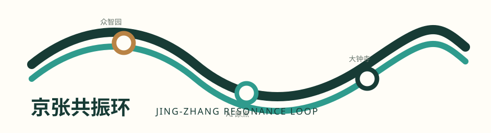
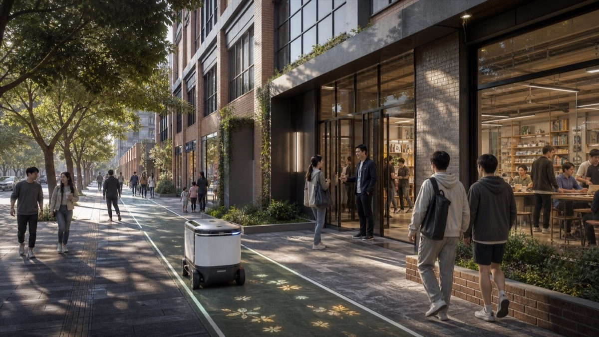
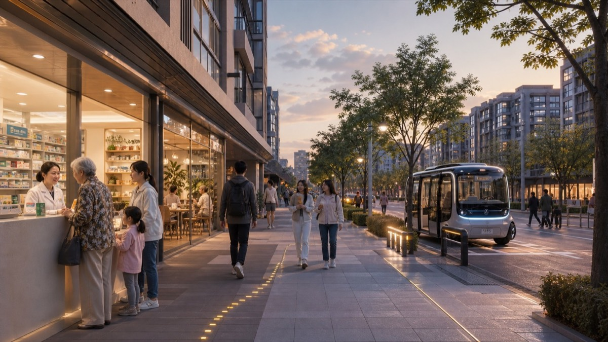

统筹研究范围
面向 43.6 平方公里提出 AI 产业生态、三区两翼协同、未来城市形态和文化叙事。
- AI创新链与人才链
- 全球案例转化机制
- 品牌命名与传播
离线电子展示成果。权威数据仍以 GeoJSON、metrics.json、矩阵和自检结果为准；本页把总览地图、三层范围、重点区域、用地分区、交通慢行、蓝绿公共空间、建筑更新项目、AI 场景、核心指标、任务覆盖、自检状态、来源与假设转成人类可读的视觉说明。
总览地图将用地分区、交通慢行、蓝绿公共空间、建筑与更新项目、AI 场景节点放在同一张证据图中，便于评审快速理解空间主线。

方案按统筹研究范围、总体设计范围、重点区域范围递进，把产业判断、城市更新和重点片区设计绑定到图层与指标。
面向 43.6 平方公里提出 AI 产业生态、三区两翼协同、未来城市形态和文化叙事。
面向 11.4 平方公里组织城市更新、用地结构、交通市政、京张遗址公园活力带。
面向三处重点片区开展详细设计，说明功能业态、建筑更新、公共空间与交通组织。
三处重点区必须有产业定位、空间策略、建筑与公共空间动作、交通接口和实施风险说明。
花园型自主创新街区。重点表达国家平台、产业展示、清河文化、对外交通和低碳交往空间。
近校型成果转化街区。重点表达高校源头创新、开源社区、人才服务、拆改留和站点一体化。
城市型智能经济街区。重点表达领军企业、智能体新业态、商业服务、绿地复合利用和路口四象限连通。
深铁蓝是铁路时间线，蓝绿色是公共验证线，琥珀色标出贡献与夜间公共服务。标志是概念资产，不替代法定导视或机构品牌。

本案以“机制—原型—场景—证据—运营”闭合逻辑，将可理解、可选择、可接管、可复盘四个门槛用于校验 AI 服务能否进入日常公共空间。
众智园 · 可信试验段
开发者与初创团队在共享测试庭院验证服务。保留现场咨询、纸质说明和人工预约；公开测试范围、异常处置、负责人和退出记录。
可接管可暂停AI 原点 · 开源转化段
近校慢行界面把成果咨询、开源发布和贡献展示放在不登录也可进入的公共前台。展示必须有授权、署名、反馈和撤回入口。
可理解可选择大钟寺 · 城市应用段
先改善过街、遮阴、坐憩、照明与静态导视，再叠加可解释提示。拥挤、误导、无障碍失效或隐私争议时切回人工系统。
可复盘人工优先每项服务都要回答：谁使用、在哪里获得人工替代、谁维护、什么情况必须暂停。服务可退回上一个验证段修订，不构成单向产业流水线。
三段只对应临时重点区索引。实际位置、尺度、建筑动作及工程条件须在正式边界、权属、交通、市政、消防和文保资料齐备后深化。
不复制国外项目的尺度、资金或治理权限，只提取可被本地进一步核验的空间与运营机制。
研究、生活、零售与开放空间并置 → 原点近校成果转化街。
历史再利用、项目制孵化、资本/客户/人才连接 → 前台、协作与路演三级空间。
研究园区、测试场、人才与产业网络 → 可信试验庭院与应用试验前台。
数字基础设施与公共空间按责任协同 → 公园公共空间优先、数字能力后置。
KPI 仅用聚合运营记录、现场观察与匿名反馈；不做人群画像、不作实时监控。未达标即暂停自动化服务并保留人工路径。
测试庭院 + 说明台 + 开放日
看什么：人工接管演练、反馈闭环、能耗说明。
失败：暂停数字演示，转人工导览。
共享工坊 + 成果卡 + 知识产权咨询
看什么：授权/署名、无账号参与、撤回响应。
失败：下架内容，转线下人工讲解。
站口导视 + 遮阴坐憩 + 限时接驳
看什么：连续步行、人工服务、投诉与夜间安全。
失败：切回静态导视与人工服务。
六张首用场景卡把 AI+ 类型变成可审查的日常服务；六道关口确保服务不能仅因“好看或有人使用”而直接扩容。
原点开源前台：实体导览、人工咨询、公开课与成果转化。
人工导诊优先；无障碍地图不被数字入口替代。
站城界面先守住公共导向、通行与隐私，再叠加服务。
可信算力花园只做概念性说明，不冒充实时官方数据。
实体地图、地面导向与人工问询始终可用。
电话、现场报修与人工巡检构成数字服务的底线。
资料与场地前置、公共价值、权利与可达。未通过则停留在桌面研究或回到问题定义。
安全与人工接管、运营责任、扩容复核。任何失败均可回退、保持小规模或退出。
场景不是口号，应说明服务对象、空间位置、数据来源、隐私边界、人工复核和运营主体。
面向开发者、企业和高校的成果发布与模型评测节点。
在可控公共空间测试交通、服务和运维智能体。
用公开数据和人工复核识别遗址公园慢行断点。
连接居住、学习、消费、运动和社交服务。
展示标准制定、可信评测和安全治理能力。
支撑清华、北大、中科院成果转化会客与路演。
大钟寺片区的数据资产、智能终端和内容消费展示。
解释分布式能源、端侧算力与公共服务设施融合。
把铁路文脉、中关村创新文化和AI新文化串联。
组织开发者节、场景开放日、竞赛路演和城市体验路线。
compliance_matrix.json 覆盖公告 1.3、1.4、1.5 与 agent.1-agent.6；standard_matrix.json 与 design_depth_matrix.json 证明专业标准和成果深度。
来源见 sources.json、agent_taskbook.json、data/processed/agent_fact_pack.md 和 standards/references。本页不得加载 CDN、远程地图瓦片、外部脚本、外部字体、API 请求或 iframe。
待补控规、道路红线、权属、市政、文保和工程条件必须在 assumptions.json 中列明，并在正文中解释对设计结论的影响。
以教育、转化、健康、商业、文化和日常慢行为连续服务系统。智能技术均以“人优先、可接管、低干扰”为原则进入街区；均为概念效果图，不表示已获批建设项目。

保留铁轨与树荫慢行界面；小型运维机器人仅在维护人员协同下服务公园。

共享工坊与人工前台面向街道开放；配送机器人沿边侧专用路径低速通行。

学习工坊、公开展示和校园慢行相连；低速无人接驳在独立港湾安全停靠。

人工药师与社区服务在前；智慧地面导向和低速接驳只补充日常出行。

铁路遗存、夜间展演与社区活动构成主角；无人机仅在远端受控配送点完成末端服务。